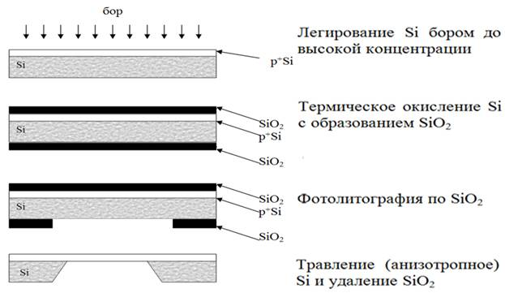

электронный
ресурс по учебной дисциплине 1-58 01 01 - "ИНЖЕНЕРНО-ПСИХОЛОГИЧЕСКОЕ ОБЕСПЕЧЕНИЕ ИНФОРМАЦИОННЫХ ТЕХНОЛОГИЙ"
|
||
| Оглавление | Программа | Теория | Практика| Контроль знаний | Об авторах | ||
|
Содержание
ТЕМА 10 Технологии объемной микрообработки § 10.1 Технология глубинного объемного травления. Технология на Si подложках. § 10.2 Волоконные технологии. § 10.3 Технологии молекулярно-лучевого формообразования. § 10.1 Технология глубинного объемного травления. Технология на Si подложках. Конфигурация вытравливаемых областей зависит от конфигурации применяемых масок. Рисунок 10.1 – Примеры конфигураций вытравливаемых областей Различают два различных вида травления Si: 1. Изотропное травление – это когда скорость травления в разных кристаллографических направлениях практически одинакова. Физические свойства кристалла одинаковы по разным направлениям. 2. Анизотропное травление – это когда скорость травления в разных кристал-лографических направлениях разная. По одним направлениям скорость ниже, по другим – выше. Физические свойства кристалла – разные по разным направлениям. Рисунок 10.2 – Профили изотропного травления Si Рисунок 10.3 – Профили анизотропного травления Si Рисунок 10.4 – Фотошаблон для травления печатных плат В технологии МСТ применяют два разных вида травления: 1) сухое газовое травление в плазме; именно так технологически легче всего реализовать изотропное травление; 2) жидкостное травление в химических травителях; так технологически легче всего реализовать анизотропное травление. Сухое (плазменное) травление Это газовое травление в плазме. Применяются SF6; SF6+O2; CHCl3 газы. Маскирование осуществляется тонкими пленками: 1) термическая двуокись кремния SiO2 2) LPCVD SiO2 или Si3N4 3) фоторезистор 4) пленками металлов Cr, Al, V и др. Реализуется плазменное травление в высоковакуумном реакторе. Плазма удерживается в области между верхним электродом и заземленной пластиной подложкодержателя. Рисунок 10.5 – Установка травления в индуктивно-связанной плазме (ICP-RIE) Рисунок 10.6 – Схема плазменного реактора Химическая активность плазмы при травлении зависит от: 1) состава газа; 2) напряжения смещения; 3) температуры подложек; 4) плотности плазмы; 5) давления в реакторе при проведении процесса. На рисунке 10.7 показана схема травления профиля кремния в плазме. Виден подтрав Si под маску. Рисунок 10.7 – Схема травления профиля кремния в плазме Физико-химические основы процесса. Разные кристаллографические направления кристалла кремния травятся с разной скоростью. Т.е. профиль вытравливаемых областей кремния зависит от кристаллографической ориентации Si материала. Отсюда ещё одно название технологии: ориентационно-чувствительное травление. Для реализации изотропного травления технологически выгодное применять сухое плазменное травление. А для реализации анизотропного травления технологически выгоднее применять жидкостное химическое травление. Хотя, химическое травление, как и сухое плазменное травление, то же бывает изотропное или анизотропное.
Рисунок 10.8 – Изотропное травление кремния Рисунок 10.9 – Анизотропное травление кремния Рисунок 10.10 – Аппаратурная схема процесса травления Этапы постепенного изменения профиля Si при анизотропном травлении представлены на рисунке 10.11. Разный профиль травления можно получить в зависимости от состава травителя. Одну и ту же кремниевую подложку одной ориентации можно обработать разными травителями и получить разные профили травления. Рисунок 10.11 – Изменение профиля Si при анизотропном травлении Рисунок 10.12 – Разновидности жидкостного химического травления кремния Экспериментально было установлено, что скорость анизотропного травления Si очень существенно зависит от: концентрации легирующей примеси в монокристаллической подложке; подбирая нужную концентрацию легирующей примеси в Si, можно получить т.н. стоп-слой. С помощью этого стоп-слоя можно практически остановить глубинное травление кремния. Таким образом подбирая виды подложки (ориентация Si), различные формы и материалы масок, различные по составу травители, можно получать объемные 3D-микроструктуры: балки, консоли (рисунок 10.13), мембраны, каналы, нанотрубки (рисунок 10.14) и др. микродетали. Рисунок 10.13 – Консоль атомно-силового микроскопа Рисунок 10.14 – Нанотрубки Пример зубчатой передачи в шаговом микродвигателе, который можно получить с применением описанной выше технологии, представлен на рисунке 10.15.. Рисунок 10.15 – Зубчатая передача в шаговом микродвигателе Применения технологии глубинного объемного травления на Si. Рисунок 10.16 – Как будет называться рисунок? Рисунок 10.17 – Как будет называться рисунок? Схема процесса получения микродатчика давления жидкости или газа в виде тонкой мембраны кремния, чувствительной к перепадам давления (рисунок 10.18). Рисунок 10.18 – Схема процесса получения микродатчика давления жидкости или газа Схема процесса получения микродиафрагмы методом травления кремния с использованием стоп-слоя (вариант 1 – рисунок 10.19, вариант 2 – рисунок 10.20)  Рисунок 10.19 – Схема процесса получения микродиафрагмы методом травления кремния с использованием стоп-слоя Рисунок 10.20 – Схема процесса получения микродиафрагмы методом травления кремния с использованием стоп-слоя Схема получения чувствительного микрозонда, представлена на рисунке 10.21.
Рисунок 10.21 – Схема получения чувствительного микрозонда Получение кремниевой микроконсоли, представлено на рисунке 10.22. Рисунок 10.22 – Схема получения кремниевой микроконсоли Схема процесса получения кремниевого микроскальпеля для нейрохирургии представлена на рисунке 10.23. Рисунок 10.23 – Схема процесса получения кремниевого микроскальпеля Технология на подложках фотоситалла. Фотоситалл – это стеклокристаллический материал, полученный путем искусственной кристаллизации стекла со светочуствительными добавками, например, окислами цезия или олова. Фотоситалл обладает высокой механической стойкостью. Под воздействием УФ-излучения можно формировать в фотоситалле участки, отличающиеся от неосвещенных различной растворимостью в жидкостных травителях. Таким образом, экспонируя через фотошаблон фотоситалл, можно задавать области с различними скоростями травления
Рисунок 10.24 – Зависимоть скорости травления кремния от величины температуры
Рисунок 10.25 – Структура из фотоситалла в процессе экспонирования УФ светом
Рисунок 10.26 – Формирование объемных микроструктур в фотоситалле после травления Сейчас технология глубинного травления фотоситалла развивается применительно к решению задач создания элементов МЭМС, не требующих высокого пространственного разрешения. Стоимость технологии относительно невысока. § 10.2 Волоконные технологии. Другое название техпроцесса – стекловолоконная технология. Изделия из стекла с малым поперечным сечением и технология их изготовления известны достаточно давно (например, устройства волоконной оптики). Краткий техпроцесс: 1) Пучок стеклянных волокон с малым поперечным сечением, различающихся избирательностью по отношению к конкретному растворителю. 2) Вытягивание этого пучка до требуемого поперечного размера. 3) Разрезание вытянутой части пучка на куски. 4) Вытравливание из куска растворимых волокон Так как для изделий микромеханики характерно наличие отверстий и поверхностей различных конфигураций, то осуществляется особо тщательный подбор материалов волокон и геометрии волокон. Данные процессы сборки пучка и ее вытягивание не являются тривиальными, но позволяют изготавливать детали с минимальными поперечными размерами отверстий до 0,2 мкм при высоте от 100мкм до 1см. Особо следует отметить возможность изготовления деталей с винтообразными поверхностями путем скручивания вытянутого пучка вокруг его оси. Эти поверхности, как известно, характерны для винтов, для червячных передач, для косозубых колес. Такие поверхности принципиально не могут быть реализованы с помощью, например, LIGA-технологии.
Рисунок 10.27 – Микродеталь с винтообразными поверхностями § 10.3 Технологии молекулярно-лучевого формообразования. Синтез полупроводниковых тонкопленочных композиций из молекулярных пучков в сверхвысоком вакууме заявил о себе как о новом методе в полупроводниковом материаловедении после первых успешных экспериментов Артура и Чо в конце шестидесятых годов. Этот метод, наиболее часто называемый молекулярно-лучевой эпитаксией (МЛЭ) стал быстро развиваться благодаря разработкам уникальных приборов микро-, нано- и оптоэлектроники на структурах со сверхрешетками, квантовыми ямами и квантовыми точками, принцип действия которых (в отличие от традиционных приборов микроэлектроники) основан на волновой природе электрона. Это, в первую очередь, полупроводниковые лазеры и чувствительные фотодетекторы с квантовыми ямами, сверхрешетками и квантовыми точками в активной области, транзисторы с высокой подвижностью электронов в канале, нанотранзисторы, туннельно-резонансные диоды, одноэлектронные приборы и т.п. Молекулярно-пучковая эпитаксия или молекулярно-лучевая эпитаксия – эпитаксиальный рост в условиях сверхвысокого вакуума. Позволяет выращивать гетероструктуры заданной толщины с моноатомно гладкими гетерограницами и с заданным профилем легирования. В установках МПЭ имеется возможность исследовать качество плёнок «in situ» (то есть прямо в ростовой камере во время роста). Для процесса эпитаксии необходимы специальные хорошо очищенные подложки с атомарногладкой поверхностью. Промышленная реализация и развитие метода МЛЭ убедительно показали, что он незаменим при получении многослойных эпитаксиальных структур с атомной гладкостью границ, прецизионно заданными толщинами слоев, составом и профилем легирования. Применение высокочувствительных электронно-зондовых и оптических средств контроля параметров получаемых структур и управления процессом их синтеза обеспечивает высокую воспроизводимость этих параметров. В основе метода лежит осаждение испаренного в молекулярном источнике вещества на кристаллическую подложку. Несмотря на достаточно простую идею, реализация данной технологии требует чрезвычайно сложных технических решений. Основные требования к установке эпитаксии следующие: В рабочей камере установки необходимо поддерживать сверхвысокий вакуум (около 10−8 Па). Чистота испаряемых материалов должна достигать 99,999999 %. Необходим молекулярный источник, способный испарять тугоплавкие вещества (такие как металлы) с возможностью регулировки плотности потока вещества. Особенностью эпитаксии является невысокая скорость роста пленки (обычно менее 1000 нм в час).
|
| (С) БГУИР |